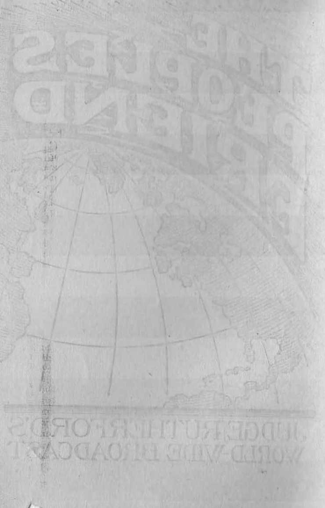
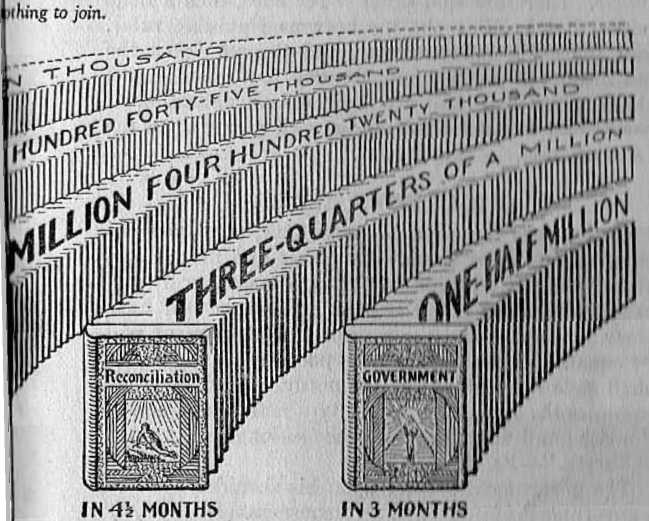
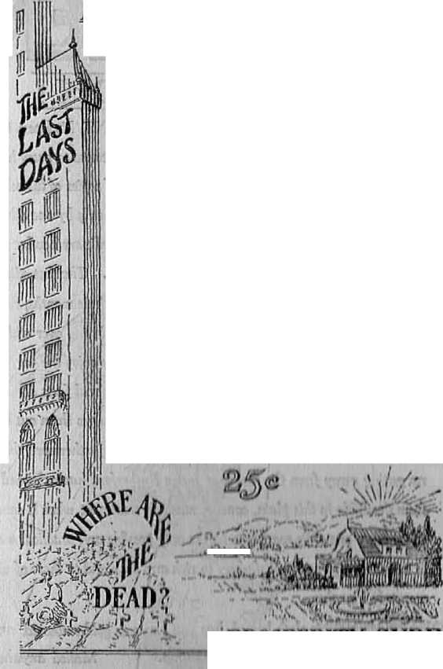
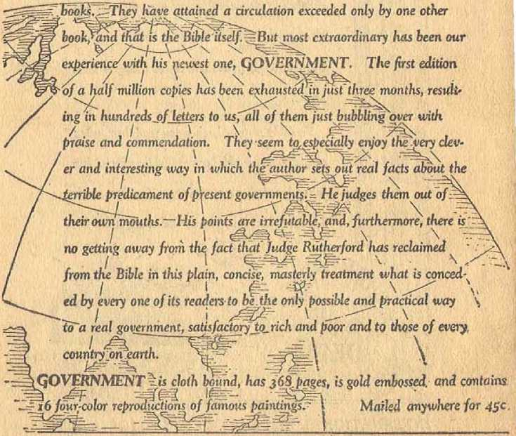

......1 <»l
t
V/OHLD WIDE BltOADCAST
I. 11 m; WIRRMg
The Peoples Friend
By J. F. Rutherford
President
International Bible Students Association
Author of
Deliverance!
The Harp of God Creation.
Reconciliation Government
MADE IN U. S. .1
Published nnd
Copyright 1928 by
International BmLE STUDENTS Association
BBOOKLYN, N. Y., U. S. A.
IN OTHER COUNTRIES
ENCL.MD: :w Craven Terraet', Yanccaster Gate. London: W. 2
CANADA: 40 I'I'win Ave.. Toronto 6. SOUTH AFRICA: 6 Leli e St., C"Pe T<)wn
'\ AUSTRALIA: 4% COlUna St., Melbourno. INDIA: 40 Colaba Ret, Bombay
The above cartoon appeared in the New York Amer-' ican May 31. IS>:2S. The American is in a position to know the condition of the country. If the cartoon states the true condition, who is the invisible ruler— Jehovah or the Devil?
JEHOVAH’S name shall be vindicated! The time has come! He is the great Friend and Benefactor of the people. For many long centuries Satan the Devil has defamed Jehovah God’s great Name and turned the people away from him to their own injury. God promised that the time would come when he would interfere in behalf of mankind and bless all the nations of the earth. The time has come now to make known to the people his purposes to deliver them from their oppressor and to bless them.
The radio is Jehovah God’s invention. Man has only found out how to use it. The time will come when Jehovah God will make it possible for his faithful representatives to stand in Jerusalem and speak clearly and audibly to all the peoples of the earth. The people will hear and rejoice.
Satan the Devil is the real enemy of mankind. He is invisible to man but uses his evil influence to direct the course of men. He is the great oppressor of the people. He uses selfish men as his agents. His rule of oppression is near at an end. It is manifest that Jehovah God intends for the people to be served with notice to this effect that they may take courage and gladly look forward to the time when they shall enjoy freedom, peace, prosperity, life and happiness.
It is but fitting that Jehovah God should permit the greatest radio hook-up yet had on earth to be used in honor of his name. It occurred at Detroit, Michigan, Sunday, August 5, 1928. The occasion was the international convention of the Bible Students gathered from the various cor, +rios of earth. These men
The Peoples Friend
and women are devoted to Jehovah (lad. The address was delivered by the president of the Association. The .Washington Post, the leading daily paper at the national capital of the United States, on the following morning concerning the lecture said :
BIBLE RADIO CHAIN WITH 100 STATIONS SETS NEW RECORD
Judge J. F. Rutherford'* Talk at Detroit is Heard by Millions, Report
According to its sponsors, the broadcasting of the Sunday morning session of the International Bible Students Association, assembled in convention yesterday morning in Detroit, included more than. 100 stations and therefore was the largest In the history of radio. It was heard by Washington listeners through Station WRIIF.
The principal speaker was Judge Joseph F. Rutherford, at one time a Missouri lawyer, but later became an evangelical preacher, and president of the International Bible Students Association.
"I had a telegram from one of the New York dailies,” Judge Rutherford said during the course of his address, “asking how much this hook-up cost, and who was paying for it.
“My answer is that it cost §50,000 and is being paid for by a multitude of Christians throughout the United States who are glad to do it.” At another time the judge remarked, parenthetically, “Satan and the Devil tried to prevent this hook-up, but were unable to do it.”
Included among those broadcasting the address were Stations WORD, at Batavia, Uh, near Chicago, of 5,000 watts power, and WBBR, at Rossville, N. Y„ outside of New York City, both owned by Judge Rutherford's organization.
FIRST BROADCAST OF KIND
The hour for the broadcast was set for 0:30 o’clock in the morning, so as not to he in conflict with the Sunday morning services being broadcast, thus marking the first country-wide broadcast ever made at this unusual time.
It was said the address was being heard in 3(3 Staten, three provinces in Canada, and was being relayed to other countries by short waves from Station WGY at Schenectady.
This would have been a wider territory covered than by the Lindbergh hook-up of 50 stations or the national conventions of 68 stations, neither of which reached Canada, or the proposed Hoover notification hook-up which at this time comprises 75 stations.
For the convenience of listeners in the Capital loud speakers were installed in the Pythian Temple Auditorium and at several other points in the city.
The visible audience which greeted Judge Rutherford at the Coliseum in Detroit, according to the announcement which came over the radio, numbered more than 12,000 persons. In addition to that, loud speakers were placed in Belle Isle Park about 10 miles away in Detroit, where, it was said, another crowd had assembled.
Shortly following the lecture hundreds of telegrams and thousands of letters were received stating that the reception had been clear and distinct in every part of America and in foreign lands. So great has been the demand for the copy of the lecture that this booklet is prepared and furnished to the people at a nominal cost.
Promptly at 9:30 Sunday morning, August 5, the program began before a visible audience of 12,000 assembled in the Coliseum at Detroit, Michigan, and at the same time it was broadcast by 107 radio stations scattered throughout the United States and Canada, and was heard by a great and unseen multitude.
Judge Rutherford, the speaker, being introduced said: “Before beginning my address I shall read a Declaration in the form of a resolution, move its adoption, and then speak to the resolution.” His address covered a period of one hour and five minutes at the conclusion of which the great audience with a shout . arose and unanimously voted the adoption of the resolution, which follows:
T1IE Bible StudMils ill inlernntion.il convention assembled do declare themsvlvvs against Satan and wholly for Jehovah of hosts, and emphatically announce further these vital truths, to wit:
First: That the peoples of earth organized into forms of government and under the control of a superior and invisible ruler constitute the world ;
Second: That Jehovah is Ilie only true and Almighty God and the source of all just authority; that he is the King Eternal, the God of justice, wisdom, love and power and the true friend and benefactor of all creation;
Third: That Jehovah delegated to his son Lucifer the authority to be the overseer of man; that Lucifer became disloyal, rebelled against God and caused man. to fall away from righteousness, and since that rebellion Lucifer has been known by the titles Dragon, Serpent, Satan and Devil; that Satan the Devil has caused strife amongst the nations and is responsible for all the cruel wars, wicked murders, all heinous ciimes and other corrupt acts that have been committed; that until now Jehovah has not restrained Satan from the exercise of power and influence over man, to the end that mankind might learn-the baneful results of evil doing; that for many centuries Satan has been the invisible ruler of the world, constantly defaming the name of Jehovah God and working great injury to men and nations;
Fourth: That Jehovah promised that in his due time he would restrain Satan and establish a righteous government in the earth that men might have an opportunity for life everlasting in happiness; and to that end he anointed his beloved Son Jesus to be the redeemer and invisible ruler of the world; »
Fifth; That Jehovah’s due time has come to fulfil his promise and to clear his reputation in the minds of all creation; that Christ Jesus has taken his high office as the executive of Jehovah and the great issue now is, Who is God and who shall rule the peoples and nations'?
Sixth: That because Satan will not surrender his wicked rule over the nations and peoples of the earth, Jehovah of hosts with his anointed executive officer Christ Jesus will press the conflict against Satan and all of his forces of evil, and henceforth our battle-cry shall be, THE SWORD OF JEHOVAH AND OF HIS ANOINTED; that the great battle of Armageddon soon to begin will result in the full restraint of Satan and the complete overthrow of his evil organization, and that Jehovah will establish righteousness in the earth by and through Christ the new ruler and will emancipate mankind from evil and bring everlasting blessings to all the nations of the earth;
Seventh: Therefore the due time has come for all who love righteousness to take their stand on the side of Jehovah and obey and serve him with a pure heart, that they may receive the boundless blessings which the Almighty God has in reservation for them.
“Blessed. is the nation whose, God is Jehovah.” Ps. 33:12.
THE statements made in the Declaration just read in your hearing arc true. Being true, they arc of the greatest importance to the people at this Lime. I ask the indulgcncft of the audience, seen ami unseen, while 1 submit proof in support thereof. I have an abiding confidence that when the people know and appreciate the truth a great burden will be lifted from, their minds. I crave an opportunity to have some part in bringing the truth to the attention of the people. In doing so I come to you as a friend of all mankind. I have no selfish interest to serve, save this, that what is for the general welfare of mankind must be for my good. The eternal welfare of men far outweighs all the money by which the commodities of earth are measured.
Good government is essential to the welfare of all people. It should claim the intense interest of every man and woman. The parents should teach their children the principles of good government. There can be no real progress made in its study unless the matter be approached calmly and without bias or prejudice.
In all governments of men there is an invisible as well as a visible power exercised for evil or for good. The invisible power is superior to the visible and is therefore the power of control. If evil, then the invisible power so exercised makes the visible unsatisfactory. If the invisible power is exercised for good, then the effect upon the visible power is good and the people arc blessed.
The world is one vast government made up of the various.nations and peoples. In all nations the people have recognized an invisible power that influences the nations’ course of action. When in dire distress the people appeal to the invisible power and thereby acknowledge that the invisible is superior to their visible governors. In harmony with this statement it. is written in the Scriptures: “Blessed is the nation whose God [invisible Ruler] is Jehovah.”—Ps. 33:12.
The inference must be indulged from this Scriptural statement that there is an invisible ruling power other than Jehovah God and that when the people arc controlled by that power it is not for their blessing.
All nations recognize the necessity of a visible ruler. The fact that the United States is at this very time engaged in a great campaign to determine who shall, be its ruler is proof of that statement. It is deemed important to know something about the visible ruler, and to this end an educational campaign is carried on. It is of greater importance to know of and concerning the invisible ruler, because his influence and power is greater than that of the visible.
I am persuaded that the great masses of the peoples of earth, regardless of religion or politics, desire to have and enjoy a just and righteous government. Seeing that man is not perfect, and that there is an invisible power that influences him, it is vital to ascertain in whom righteous power resides and who is the dispenser of evil power. In discussing this matter there is no disposition to reflect upon men. Bible Students have no desire or inclination to fight any man or company of men. Their desire is to place the truth clearly before the minds of the people. When
the truth is understood it will be found that the interests of all men are alike. I now submit the proof that there is an evil god that controls the world ; that Jehovah the Almighty God of righteousness will shortly destroy the power of the evil god, and will establish on earth a righteous government that, will relieve the people of their burdens and bring them everlasting blessings; that we are now at a crisis and the issue before the people is the greatest of all time.
“Who is the invisible ruler of the nations of earth? Is it Jehovah or another? Jehovah is the true God. Of him Jesus declared that to know God means life everlasting. He is the great Eternal One, the Creator of heaven and earth, the Giver of every good and perfect gift. (Isa. 42: 5) When Israel was his chosen people Jehovah was his national name to them. His name means more than that. It signifies his purpose toward his creation. His Word, the Bible, discloses his purpose; hence the Bible is the authority for this conclusion. He is just and righteous. His "judgments are true and righteous altogether". (Ps. 19: 9) "For Jehovah is righteous; he loveth righteousness.” (Ps. 11:7, R. V.) His righteousness is likened unto the stedfastness of the great mountains, and his justice as deeper than the bottomless sea.—Ps. 36: 6.
Jehovah is so wise that he can never make a mistake. The wisdom of the wisest men of the world is foolishness when compared with the wisdom of Jehovah God. (1 Cor. 1:25) Concerning his creation his prophet wrote: “O Lord, how manifold arc thy works! in wisdom hast thou made them all." (Ps. 104:24) In wisdom lie created man, and his wisdom prepared
J ehovdh 13 ;
the great plan for teaching man by experience and the granting to the obedient ones everlasting blessing.
In Jehovah resides all original power. All others exercising power do so by the permission of Jehovah. AH the power of all the nations of earth is but a drop of a bucket or the small dust in the balance when compared with the power of Jehovah God. (Isa. 40:17-22) He is the Almighty God, which means there is no limitation to his power. (Gen. 17:1-6) For him lo will a thing to be done means that it shall be done. When he willed to create the earth and the things \
thereof his spirit moved upon the elements, and the earth and living creatures thereon resulted. (Gen. 1: 1-26) His spirit is his power, invisible to man.
Jehovah God is love, which means that everything he has ever done or ever will do is prompted by unselfishness. He is self-contained and needs nothing, and none can bring him any benefit. All his acts are performed for the benefit of bis creatures. His proph- 1
et, who had learned of him, exclaimed: “How excellent is thy loving-kindness, 0 God! therefore the children of men put their trust under the shadow of thy wings.” (Ps. 36:7) “Because thy lovingkindness is better than life, my lips shall praise thee.”—Ps. 63: 3.
I am not unmindful of the fact that Jehovah has repeatedly been charged as unjust and cruel. But when we learn that his enemy has made the charges and instilled them into the mind of man we know that the charges are false. (John 8:44) In Jehovah dwell justice, wisdom, power and love, all working together in exact harmony and always exercised for the good of his creation. For this reason it is written: “Blessed is that nation whose God is Jehovah.” Tho converse of that, statement must. lie. true; therefore no nation could have a real blessing unless that, nation has Jehovah for its God.
To be blessed a nation must have peace, be free from oppression and the fear thereof; the people must be secure in their properly, in their homes, and in their bodies; the. laws of Iha! nation must be administered equally for the. general welfare, of all, with special privileges to none; and the people must enjoy prosperity in their material and in their spiritual affairs. Is there a man on earth today who can within his memory point to a nation that has had a real blessing? I am certain there is none. There is a reason for this. 1 wish to emphasize that my purpose is not to bring reproach upon any people. I desire now to state the facts as they exist, to the end that we may honestly and fairly determine who is, and for a long time has been, the god or invisible ruler of this world.
How may we determine who has boon the invisible ruler of man during a fixed period of time? The rule laid down by Jesus is a safe one to follow, to wit: “By their fruits yc shall know them.” If a nation or government practises injustice, shows undue favor to a few and greatly oppresses the majority, surely no honest man could say that that nation is just. If the visible power is exercised by a few to the detriment of the majority, that course shows a great lack of wisdom and the absence of love. Looking back over the history of the nations of earth during the past twenty-five hundred years it will be readily conceded that in that time there has been gross injustice practised upon and great oppression put upon the peoples that have been ruled. In that period of time no ruler Tins left an ideal record behind. Is that unhappy condition and the result due to the fact that nil riders are willingly unjust? I am sure that is not the reason. On the contrary facts show lhat fflnny fillers have diligently tried to establish a just and wise government; and after laborious efforts have signally failed. Many rulers have laid down their lives in a vigorous endeavor to better the people and they have not succeeded. Their honesty could not be called in question.
Then why have they failed? True there have been officials who have been willing!y dishonest, cruel and oppressive, but even the worst of these have yielded to a sinister influence which has induced them to lend a wrongful course. That evil and powerful influence has been exercised by the invisible ruler over the visible rulers. Why has this been so? God’s Word discloses the true answer, to wit, that the invisible ruler over the nations has been and is I hat groat evil one, Satan the Devil.
When man walked in Edon, the garden of JehdvaT. he was perfect in his organism. Jehovah delegated to his son Lucifer the power and authority to bo man’s invisible overlord. Lucifer was then perfect and a creature of glory. Lucifer and the Logos were the t wo “Morning Stars” that together sang an anthem of praise at the laying of the foundation of the earth. (Ezek. 28:14-17 ; Job 3.8: 7) It was the nature of num to worship Jehovah God. Lucifer desired such worship for himself. His ambition led him to rebellion against God, which activity began by Lucifer's indue-ing man to disobey God’s law. (Isa. 11:11 II) That wrongful act lias worked great havoc to mankind.
As a result man was sentenced to death and expelled from his paradise home, and all mankind have since suffered from the effects thereof. (Gen, 3: 3-24; Rom. 5; 12) That evil effect upon the nations is thus expressed by the prophet: “JTow art thou fallen from heaven, 0 Lucifer, son of the morning! how art thou cut down to the ground, which didst weaken the nations ! ’ ’—Isa. 14:12.
Ceasing to be an angel of light Lucifer became the very embodiment of darkness and wickedness, and from then till now the, Bible, designates him under the titles Satan, Serpent, Dragon and Devil. All the unrighteous wars that have been fought, between men, and all the cruel murders committed by men, have been due to the wicked influence of Satan the Devil because he was the first murderer and the father of lies. (John 8:44) All the tears of bitterness that have flowed from those who have been dealt with unjustly and sorely oppressed must be traced to the influence of Satan because he is the great and wicked oppressor. (Ps. 72:4) All the bitterness that has ex-• isted and been exhibited between professed Christian people, all the religious intolerance and persecution of Christians, must he laid at Satan’s door. All the foul aspersions against Jehovah God and all defamation of his holy name must be laid to the charge of Satan the Devil. •
Today in every nation there arises a cry of the people against unrighteousness. I hold that the primary unrighteousness manifested by the governments can not be laid, to the charge of men who hold the offlci'H. There is an unseen power that induces tinriglUeoiiH-ncss and oppression; and that power is exercised by Satan the Devil, who is the god or invisibles ruler of this world. Nineteen hundred years ago the pmToet man Jesus was on earth. Ho camo into the earth Io represent his Father Jehovah God and to do hi>i Father’s will. (John 5:30) For three and one half years Jesus suffered the most cruel pcrsceiil ion that could be inflicted and which culminated in his ignominious death. For a time the common people hen rd him gladly and hailed him as their Savior. Then thn Pharisees and rulers incited the peoplo ngainsl him, and they all turned against him, and t he Homan government yielded to their erics for his blood and they crucified him. Were the Pharisees nod I ho ruler< wholly to blame for his death? They wore parties l > the wrongful act of killing him, but the Apostle Peter, under inspiration, said to them, as recorded in Acts 3:17: “And now, brethren, 1 wot. [know] Unit through ignorance ye did it, as did also your rulers.”
Who is the responsible one and who really prevented the visible rulers and Pharisees from knowing and understanding the truth? Jesus answered that Satan the Devil was the one, because Ihoy were yielding to his influence and doing his will. (Mall. 28; 14-16 ; Jolui 8: 42-44) Furthermore, it. is plainly written, in 2 Corinthians 4:3, 4, that Satan the Devil is the god of this world and that he blinds the minds of men lest the truth should shine into their minds.
It was Satan the Devil who sought to induce Jesus to violate his covenant with Jehovah and I hereby bring about Jesus’ own destruction. Failing in this he did not eease his activities against Jesus. “When the devil had ended all the temptation, he departed from him [Jesus] for a little season.”- Luke I : 1.-13.
From time to time Ilie Jews sought to kill Jesus, and in every instance they were acting under the influence of Satan the Devil. As Jesus neared the end of his earthly pilgrimage he said to his disciples: “Hereafter I will not talk much with you: for the prince of this world comoth, and hath nothing in me.” (John 14:30) Shortly thereafter Judas betrayed Jesus into the hands of those who killed him; and, as to the responsible one who induced Judas thus to do, it is written: “And the chief priests and scribes sought how they might, kill him ; for they feared the people. Then entered Satan into Judas surnamed Iscariot, being of the number of the twelve.” (Luke 22:2, 3) “And after the sop Satan entered into him. Then said Jesus unto him, That Ihou docat, do quickly,’’—John 13:27.
The proof is therefore, conclusive that it was Satan, the invisible ruler of this world, who caused the death, of Jesus. Such wicked persecution could not. have proceeded from Jehovah God against his own Son. From then till now true Christians have suffered violent persecution. Nearly all of the apostles of Jesus suffered violent deaths. Was Jehovah God responsible therefor? Certainly not. Jesus Christ is the anointed Son of God; and the church are the body members of Christ, and each one is therefore a son of God.— Bom. 8:14-16.
Afterwards the Romans persecuted and put to death many Christian people. The French government did the same thing. Many avowed Christians were burned at the stake in the British Empire. John Calvin, the great preacher, when he held a high position in the government of Switzerland, caused Scrvclns Io ho burned at the stake. In the. Turkish governmmil I lion sands of people were put to a cruel death beciius< |.lw\ claimed to be Christians. During Ilie World War Christian people were persecuted, imprisoned and killed in nearly every nation engaged in llm win- because those Christian people would not violate ll>-ir conscience and God’s law by killing I heir follow mini Shall these terrible deeds of blood bo elmrgi'd wholly to men? I answer, No. The wicked influence of I Im invisible ruler Satan induced the commission of .■.imh great crime. Such wrongs could not haw prtx i < d- il from Jehovah God, because ho is jnsl and Itiviim and because that persecution was leveled chiefly against his children.
All the evidence shows that Satan, l-lm invisible ruler of this world, is the. r< sponsible one fur such wrongful acts, and the conclusion is in harmony wiih the words of Jesus, who said to his followi ■>: " liecause ... I have chosen you out of tlm world, Ihei'o fore the world hateth you. ... If they have per me, they will also persecute you. In the world ye shall have tribulation.” (John 15:18-21; 111: till) Tin m further proof that the persecution <>f Christians ha t been induced by Satan the- Devil and that he i llm invisible ruler of this world. The fight of the Christian has not been against mon, but ngninst the invisible Satan and his cohorts of evil. Upon this .........
it is written: "Put on the complete armour of (loci, so as to he able to stand firm against all the al ralngeiim of the Devil. For ours is not a conflict with iihtu flesh and blood, but with the despotisms, ll.....mpimi,
the forces that control and govern this d irk world.” —Eph. 6:11, 12, Vfej/moutZt.
For the purpose of proving (lint Sa.lnn is the god or invisible ruler of all the nations of earth, and that he is primarily responsible for all the wickedness, crime, oppression mid intense suffering of the peoples, I read into the record the testimony of some well-known men of the, world.
For a long period of time the trade in women for immoral purposes has been carried on in many nations and the governments have licensed such wicked traffic. An effort was made Io abolish that evil practice. Concerning the League Committee appointed to investigate and report, upon the abolition of this wicked traffic the Manchester Guardian, under date of March 6, 1928, says:
It proved impossible to obtain a unanimous recommendation for the linniedintc nbulilion hy nil governments of the system of licensed brothels. Representatives of the governments of countries where this syshinl still exists, such as France, Italy, Ilonmanhi, Spain, tint! Japan, opposed the proposal, requesting flint further Inquiries should he made about the consequences of the abolition to public order and public health. . . . The Belgian delegate was one of the most convincing advocates of abolition, although the system of licenses still exists in Belgium. . . . Five years ago, France ami other governments objected to liny discussion of the subject on the ground that it was merely a domestic question. Now the internniionnl character of the evil is no longer denied.
Concerning the Ihnimniiian government The Nation, in its issue of June 13, 1928, says:
The Roumanian Government, in fact, stands for corruption and unconcealed bribery; It stands for pogroms and the violent persecution of the national minorities within the borders of lloumnnin ; it stands for (he property rights of prominent members of the Liberal party at the expense of other individuals and of the nation itself.
In Ttussia the government is deporting Z’miibii t<> bleak Siberia, where they surfer iii<h"u'ribnbl<i iiumiy, The New York Times of .June 3, 11)'.’.3, quotes In Arlosoroff as follows:
Places consisting of three to live Ihhihoii, iilhndod ni n distance of hundreds, sometline > more ilinn n Hummeiil miles from a railway station, with mull nervier only Ihfim times a year, are selected to form Ilie ri'nldoitco of llv de ported Zionists.
The Ogpu, the Soviet political secret iivivln', provldra ......
of the deportees with only about three ilollnrn u month.
The convicts are prohibited from wnllthiu heyotul Ibu bounds of the village. Deportees who full to |»iet»*in llit'in selves for daily registration are .......iitltnM nlleni|>llim »•>
escape and are punished by confliioiiieiil In n ............. ..
Sick persons suffering from neiih' iilttnh'. of fin........
dragged dally to register. In Klrgisln linin' thnn fnrly Zionist deportees have lieen punished by linprlnoiu......i on
account of letters found nt Ihetr ........ lOvcry ne. ..nd
month the location of the doportet-n bi cliiiiip.'d in m dvr u> prevent “adjustment” and acijulHlIlon of n millable or cupation.
Italy has abolished her consliliilion, mul her |irmimf government is a tyranny. The Mitiu'limler (Iwirdian of June 9, 1928, publishes a comnuuihnl.ioii I’rum Signor Nitti, ex-prime minister of I Inly, I rani which th.' following is quoted:
With ail freedom of association. of itmieinhly, of the pre.in suppressed, all the Independent pnpern, even t'l.irriiiulv1 and Catholic, suppressed, boys mid girls are in Iio brought up from the tenderest years In the mill of vloltmi'n. . .
Irresponsible children, even young itlils, tire anlioil for Um defense of the regime. In the huti'Ih of Hilly vhlhlrim of both sexes are to be seen going through military drill ulili firearms. They are taught ihe prlm'lpics of vloleiu .., ilmv hear every day justifications of war; hatred h Umpired in their young hearts. They aro told that Holy should i......
empire, and that in consequence ulit* will hmm to go In war. . . . Every freedom of professional activity In JtijlLrJrli'd;
the independence of the magistrate:: Is suppressed; special tribunals, no longer composed of ninglsi rules but of party members, judge and condemn fliolr orison on is, who have hardly any means of defense, and deport them almost always without having put them under hiteri’ngntlpn. To leave Italy without the permission of the government has become impossible. . . . Italy lias become a vast prison. Where there is no more laughter ami no more life, and where an extreme poverty, in spile of false Informal Ion spread by official agents in every country In Europe mid America, is becoming daily more insupportable. Thousands Of honorable citizens who can no longer get permission to leave Italy have to undergo every sort of limn Illation: Illustrious generals, deputies, professors arc thrown Into prison or deported to desert Islands. PoHtlen! crime .....I torture are
held in honor as in 1.1m worst periods of the Middle Ages.
The oppression of the peoples of Egypt and India by the great British Empire is well known to the people of all lands. At homo her yeomanry are burdened to the breaking point under, the great load of taxation to enable the nation to carry on her imperialism. From all parts of the earth arc heard the cries of the people because of unreasonable taxation and other burdens laid upon them.
The United States is the richest country in natural resources on the earth ; yet in this land of plenty millions are without employment, and suffer in want for the necessities of life. At Hie same time the burden of taxation and graft hns increased to the breaking point. The New York American, under date of December 17, 1927, says;
Graft and corruption are the curse of government. Nowhere Is their burden heavier than in New York, . . . The average citizen reaches iho breaking point when crooked politics and crooked business unite to double the charge. Scores of property owners in Queens, including home owners, are threatened with having to let. their property be sold to meet the exorbitant Queens sewer assessment. Some esfi-mates are that half of the entire $t(l,O0(l,onn < <> i m im. Jamaica system is due to graft.
The gigantic light and power I nr.I hie .....Tiip1<-<l
the primary parts of the goveriiinuitl t invaded Ihv schools and colleges, corm pled lie- l.wielirni, and nmdn a systematic attempt to (urn the mind । of llm ymilli from the. right principles of gnvrrnimml Tim Nt w York American of June 21, I92H, ipmir. I'.mipi m.mi La Guardia as follows:
The revelations in the Senate. mid (Im Invrnlhml Inn in the Federal Trade Commission of fim power im । ...... in ■
closed one of the most cruet iiionnp<dlr a over tmimd in im > country. Electric power Is hl Ilir humin <d‘ nn ..........
monopoly, and the disclosnri'-i would hidh nio il.nl minimi i of dollars are available for corruptluii, .....trul oi l.’idnlii
tion, and the subsidizing of hmlru.-iImu. In l...u< p.il.m oud private colleges throughout ihe I’oiiutr.r.
That wicked corporal ion has not won Iw.'ii nblilud by the visible rulers of the Ami riean imlimi
The New York Time.1! of June ITJH, qnob । Gdi ator Underwood as follows:
The people who exercise llu> power me mil ulum . tlm same people with those over whom 11 bi <■...... I < u
ganized minorities now rule. Tin* plain pruph- art mil organized. They have no agents r. I the mpli.il i>. p... . i their interests; they are oflen mhhiiiuim-l mid mi. i. .1 i.v untruthful propaganda.....\ hill half id Ilir Inwi nuw
bureaucracy that every day la in........... .........uul
oppressive.
Senator Reed of the Uni I cd Sinh .".eim Ie, .
public platform and in Ilie prims, dviduri", iluil tim government of the United Stnlen is now in th. h n..hi of “boodlers, grafters and lohln । ; . ’ I, .1. h.mih the God of those wicked mon ?
Derelictions of every nation on emlli mi,''hl he In tm mentioned if time would permit. My purpose is not to magnify their shortcomings hut Io mention enough to show that Jehovah is not the god of these nations but. that Satan the Devil is I he invisible ruler or god of every nation now on earth. His subtle influence always for evil is responsible for the crimes against the people and the grout suffering of ihe people in every nation. At the same lime he bus sought diligently to keep the people blind to Ihe real truth.
What could be the purpose of Satan in leading the people into such deplorable conditions, causing the nations to war against each other and at the same time to call themselves Christian? Satan’s primary objective has ever been to defame Ihe name of Jehovah God and to cause the people to hate and turn away from Jehovah, that he (Satan) might, still keep them, under his rule and control. He 1ms falsely induced the clergy, his visible representatives, Io teach that Jehovah is the god of the mil ions of earth and at the same time to charge Jehovah with the responsibility for all war and crime. Th doing this he has caused millions of honest minds to turn away from the true God and to east away his Word, the Bible.
Since the World War il is conceded by the leading men of every nation that crime and wickedness has increased; that organized Christianity is losing its influence over the people ; and that corruption in high places becomes more marked. Mr. Lloyd George, in an article published Sunday, June 24, 1928, says: "
The young men who passed through the war came to the conclusion I hat a religion which permitted and seemed to encourage such an outbreak of savagery was an exposed sham. The revolt, or, rattier, the sulkiness of youth is the most serious problem with which the churches are confronted.
Why is this unhappy condition enhin......I m ih> hml
decade? The Scriptures nnswri ; ‘ 'Ww io Ilir m habiters of the earth, and of I he son I for |lm d< ml m comedown unto you, having ureal wrath, Innnu ho knoweth that he hath but a. shorl I ime " Um I ' I '
If all just power resides in Jehovah ttul, uln Im , he permitted Satan to exorcise paw । o\< । ih> n omn . Briefly answered, he has permitted ii m । that mankind might by experience have a full no,I mon plete lesson in the baneful effect , of wroioi doiipi God expelled man from 1’kleii, and r i Ind'on him good, and permitted Satan Io place evil hut'........
and permitted man to exercise hr; free nun id .mine i and to follow the Devil, suffer row ami d iih,m in be faithful and obedient Io Hod mid learn ih. ion r.> life everlasting and happimst. To llml end Jehovah chose the Israelites and entered into a nr,. mini ullh them. The very first words of (hut or.< mm| hi* th.it the Israelites should have no other "od hosiileu .1 hovah and should not bow down and v.mnhip nih- r gods. (Exod. 20:2-5) That comimimlnicnt v.<. m>t given because of selfishness on Jehovah's purl, Iml solely for the benefit of man. In other words .Ie Inn a h said to them: 'Satan and his a oi niic i will lend you into suffering and death. If you wdl live, hear mv voice and obey me.' It was like a eoiradvrnlo paimif saying to his wayward son: 'Do tml follow Hint wicked man and lose everything, hilt chip me il vmi will be happy. ’
The charge is often made that Jehovah In n criwl and bloodthirsty God. Thal elm r e in wholly I'nl-if Bear in mind that Jehovah is the only .ouicc of 111<
He gives and he has the right. (<> hike away, By reason of wilful disobedience Adam was justly sentenced to death. By inheritance all men camo into existence without the right to life. (Rom. 5: 12; Ps. 51: 5) Nations under the influence of Satan persisted in persecuting the Israelites as God’s chosen people. They were grossly wicked, justly condemned, and deserved to die. He executed them as a sheriff would legally execute a condemned criminal. When the Israelites persisted in wilfully disobeying God’s law, for their own good Jehovah used other nations as his executioners to punish them. In every instance God’s acts have been legal and just and exercised for the benefit of man.
Twenty-five hundred years ago God withdrew his favor from Israel because of her disobedience and permitted Babylon to execute his judgment against that nation. At the same time he promised that he would in the future establish a righteous government at the time of the coming of him whose right it is to rule. The faithful ones have been waiting for that due time of Jehovah.
Is it to bo understood from that statement that Jehovah intends to establish a righteous government on earth for the benefit of man? That is exactly what it does mean. Jesus Christ is the beloved Son. of God. He is the anointed Governor or King of the world and in God’s due time he becomes the invisible Ruler of the world in complete harmony with Jehovah’s will. Where the power of the invisible Satan has been used for evil, the power of the invisible Christ will now be used for good and for the blessings of the peoples of earth.
When Jesus was before Pilule he declnrvd hiiwu If to be the Anointed One to rule Ilie world W|irii Im was raised front the dead all power In lieiiyi n mid earth was committed Into lii-i hmidii (Mull. "II. Ill), He did not begin, however, to cxiirttlini Hud imwptf nt once. When he ascended into hruven Jelmvah wild to him, as recorded in Pn, 110. I "HH limn id my right hand, until I malm thine cm mm ||iy l'm)|ri|util " The World War marked the < nd <d' Hud |m|'foi| of waiting, as shown by llm h-limony id .)< nm htm •• If (Matt. 24 ; 3-14) That, mark'd the I une win n .h'lmi uh through his prophet say:i: “Vet have I ml my king upon my holy hill of Zion.” (Ph " (I) And now Jehovah says to Chrini, (uirlli'M ।ighfofinn iliivortiiir "Ask of me, and I will give then the mdlmia lor lliinn inheritance, and the iitlerimml purl i id' the mu lti I'm1 thy possession. Thou shall break |lwm |Hm puwrui id' evil] with a rod of iron; llmu uluill dimh them in pieces like a potter’s vchhcI. ” Pa H, II, l\ P,
Thebeginning of the World War imiilmd llm end of Jehovah’s waiting, Satan win then emit mil id' heaven and has come down 1:0 enrlli, hero In eiiri'y mi his wickedness against which (foil glvuu warning. (Rev. 12:12) Jehovah cmmnmnla Hint milieu imw bn served upon the nations before Io- pruem dn to dmilrov Satan’s power; therefore he iinyu to llm rnforn of earth: “Be wise now, thornfure, (> ye liiim.ii; lie In structed, ye judges of the earth, Serve |give allrgiaiimi to] the Lord . . ., lost he be nngr.i , mid \ <i jmrhih from the way, when his wndh n kindled bill u Hille, Blessed are all they that put 11...... i.riiiil. in Idin,” ■
Ps. 2:10-12.
Now the great issue before llm mdioiin mid penpkni of earth is, Who is your God and whom will ye servo, the Devil or Jehovah?
Jehovah God will shortly overthrow the Devil’s established organization and will set. up righteousness in the earth. Before he docs so he offers the nations of earth an opportunity to voluntarily renounce the Devil, acknowledge Jehovah as the only true God, and Christ as earth’s rightful and righteous Governor. The purpose, is now to serve notice upon the nations and peoples that they may take their stand on the side of Jehovah. If they fail so to do, then what shall follow ?
At stated intervals of time Jehovah has forcefully brought his name before the peoples, lest they should forget that he is their only Benefactor and Life-giver. When the Egyptians oppressed the Israelites, God went down into Egypt to make for himself a name. (2 Sam, 7; 23) He sent Moses and Aaron to serve notice upon the Egyptians. What came to pass there foreshadowed greater things to come to pass and which are now beginning. (1 Cor. 10:11) In serving notice Moses and Aaron represented Christ and his church. Egypt and its ruler represented the Devil and his organization. God there exercised his power to overthrow the Egyptians and their armies. Now the nations of earth failing to lake their stand on the side of Jehovah but holding to Satan, God will overthrow Satan and his organization in the great battle of Armageddon and all the nations and tribes of earth shall see it.
While all the nations will bo involved in Armageddon it will not be fought between nations, as
. I rmagiddun
the great World War was fruighl Tin lipl in <•>. . I< elate that it will be "the grcal bnllhi id (hid \1 mighty”. (Kev. 16: 1'2-14) Tin1 fvm..... I'm Ilin Inillln
is this: The time has come for (lod'a iiiitiliiind r. m-. Christ Jesus, to take over tin rid< । Jup id (In cm Id and to rule in righteonsim , >i m .........I...... i
now end. Arrogant, cruel mid wielu-d b< .......I .......p
tion, Satan thinks he can del', al .!■ I.....d......I Ila i>
fore prepares for the gre.aI bnltb id' A t ninp<«l>l<>it llu musters all of his forces, both visible mid nr i ild< He puts forth all of his (mihaivnri i<> di.....hi Umi,
and to turn the people againal God, mid h. indimi’ them to embrace a religion Hud rnlmh Imr.......
God. He blinds the mind.H of Jm. nun, Imillim Hum to believe that they have llm nbilily In i Jidilinh H di sirable government and that ihey uur l» nidid in no doing by heeding the advice of mi npii.hilc mul dm honest clergy. He induces Um mcIIIhIi (In....... Io I"
lieve that their power is irivml dil> and llml lb.......
corrupt the rulers and opp)c । llm p<ople m a ill Thus the forces of evil arc hi rayed m-....... (hul mid
his anointed.
Jehovah will no longer pviinil ; hd mi In i o i ■ i m hi t blinding influence over Ilie pinplvii of llm mi Hi I In great battle of Armageddon ri m« • ■ ■ h i h> immh all creation that Jehovah is the Imo (Ind mid In .Idm him there is none. Some viimni <>l llm Inillli m Armageddon is given in (Ind a Word The Him ...... c
for action and he says to his beloved Him, Ida muiiiiiml Priest and King; "Thou art. I'ldivi tlirui lie ohlldiim of men; grace is poured itiio Ihy hp. lie i> i..i, ibnl hath blessed thee for ever. Gird thy <wmd upon Ihy thigh, 0 most Mighty, wiIli (by <dur\ and Un urn a a m And in thy majesty ride prosperuirly |n nuinl’H idh and meekness and righteousness; and thy right hand shall teach thee terrible things.’*- Ps. 45:2-4.
Furthermorb he says to earth’s new Governor: "Rule thou in the midst of thine enemies.” As Satan refuses to yield his rule, the battle must follow. Further describing it the prophet says: "The Lord at thy right hand shall strike through kings in the day of his wrath. lie shall judge, among the nations, he shall fill the places with the dead bodies; he shall wound the head [Satan] over many countries.”—Ps. 110:5, 6.
As to the far-reaching effect of Armageddon God’s prophet Jeremiah says: "A noise shall come even to the ends of the earth: for the Lord hath a controversy with the nations; he will plead with all flesh; he will give them that arc wicked to the sword, saith the Lord. Thus saith the Lord of hosts, Behold, evil shall go forth from nation to nation, and a great whirlwind [of trouble] shall be raised up from the coasts of the earth. And the slain of the Lord shall be at that day from one end of the earth even unto the other end of the earth: they shall not be lamented, neither gathered, nor buried; they shall be dung upon the ground. Howl, ye shepherds, and cry; and wallow yourselves in the ashes, ye principal of the flock: for the days of your slaughter and of your dispersions are accomplished ; and ye shall fall like a pleasant vessel. And the shepherds shall have no way to flee, nor the principal of the flock to escape. A voice of the cry of the shepherds, and an howling of the principal of the flock, shall be heard: for the Lord hath spoiled their pasture.”—Jer. 25:31-36.
Now notice to the nations is being given by those who are devoted to Jehovah, and this regardless of
creed, denomination, or provimm rondll nm n| mini tude. Satan and his .....mtn uro nmlniiff u <Um>i•>->>tl>
effort to prevent the giving of ndi noth'- .Irmin dr clares that when this wiliii'iii work in dmm Ainuii'rd don shall follow, and he diwirlbi'H it mi n him' nf Irlbil lation such as the world him m vri l» I..... Im»un mid
will never again know. Mall ' I I,
As a further description l.lw pioplni nm ' I'lm earth [Satan’s visible nrgmii'. .d imi | Modi h r| |u mol fro like a drunkard, and shall Im .....nod Ido n .■><-
tagc; and the transgression I hr mid’ slnill Im Innvv upon it; and it shall fall, mid iml rtim iwiiii Ami it shall come to pass in Hint day, (Ind llu lull'd »lhaf| punish the host of the high mir . Ihnl mr mi |ii|di, mi l the kings of the earth upon l In imih ” li 'I 'it "I
Why will Jehovah rngnim in imh n h 11 iblr Iml 11 ■'' The answer is because evil numl he mmlirnhd mid Satan, who is the god of Him world, mintl. I'rn'li tn further rule over the govrrnmmil > mid nnlhimi nl earth and therefore must hr mrit<d rtmiplrloly /mil his organization for ever di nt rm i d Jidmvidi will make for himself a name, mid by IIdn grout ........nil in
tion of his power will tent’ll lh< proplr lh>.l I..... iln
Almighty God and that tin hlr 4ll||H ol lili, llbmly and happiness come from him mid him nlmw
The prophet, further diwrlltlng A i ulnin dduti mid what shall follow thcrenl'ler, mi.ym "Tlmy ivi I in mid fro, and stagger like n driinlmn mini, mid im nl llmll wit’s end. Then they cry unto tin limd In I holt' trouble, and he bringi-lh ........nt m' Hull dbitipinu ।
He maketh the storm a calm, no Hint llw wiiv< n I hri । nl are still. Then arc they glad In nu । Hu y be ipilrl , so he bringeth them unto llwir d< md hmiii " I'n 107: 27-30?
Skeptics may howl, scoffers may scoff, scientists may continue to guess; but the Bible gi The astounding and ever-increasing call for the five books shown below, written by Judgi ‘in life, are hunting the Truth and nobody is really happy who doesn’t know the Truth* earth but to whom come perplexities, questions and doubts that make him wonder what What interest, if any, has Qod in us? Is he responsible for present a'vifearion and its doesn’t he care? Why do we die? Whenrdo we go then? etc.
What would jou say if we told you that Judge Rutherford has dug out of the Bible hundreds of others equally puzzling or more so? Do you really think you would be risli perhaps, for entertainment. ‘We’ll guarantee that much for this set, and more: the bl
Not sectarian. Not ecclesiastical. Not theological. Just good common sense—anc
IN 7 YEARS
Here arc the five bonis of 368 or more pages each, cloth "bound to make rt very attractive color combination. In'their order from left to right they arc live green, marine blue, celestial blue, tangerine and golden yellow. Certainly a vivid set of boats. All are gold-shunped and embossed, the latest, three each containing sixteen four-color reproductions of famous paintings. The entire set of five mailed postpaid anywhere, anytime, for
OARPrffiOD
DELIVERANCE!
IN 2’* YEARS
IN 1 YEAR
International Bible Students Associate
For prices in other countries address cur oft
majestically on as the only source of reasonable cipljnau o <>f lif. \ i-r..it ptu/hmi. utherford, is conclusive proof that people, no matter of what < wed, >.i. , <>> mirion, You, reader, whoever you are, know that’s so. There Isn't <i ri’.noning p. non on ' whole thing is about. Who is Qod, anyway! Hoti* rind uh/ <liil nr ....... Iiri.-f
■•t failure to bring peace and happiness? Is he powerless i<> w.ii/y lonihlioio, or
Italy satisfactory and reasonable answers nor only to the ulxwe .(ucxi.mi Put to [ too much at the price duoted? You’ve often paid more f«i one I.....A, <i not< l
wt surprise of your life.
• 117 Adams St., Brooklyn, NAT
in iSosc coumriej. Su tin cn fags 3.
The desire of all honest persons, be they republican, democrat or of other political persuasion, is that the people might be prosperous, peaceful and happy; and the desire of all honest kings and rulers throughout the earth is that the people might have a government that would know no war and that the people might enjoy peace, health and life. Such desire could never be realized while Satan the Devil is the god or invisible ruler of man. The battle of Armageddon, now near and which shall shake the earth from center to circumference, is all-essential to awaken the people to the fact that only Jehovah can satisfy their righteous desire. Therefore God says: "Yet once, it is a little while, and I will shake the heavens [invisible rule], and the earth [visible rule], and the sea [even the multitudes of earth], and the dry land; and I will shake all nations, and the desire of all nations shall come: and I will fill this house -with glory, saith the Lord of hosts.”—Hag. 2: 6, 7.
Christ, who is God’s anointed King, must now become the Ruler of earth. His power and influence is all for good. Under his rule all oppression, graft and crime will cease, and the poor and needy will have their just share and the way of his government will be equal. "He shall judge tho poor of the people, he shall save the children of the needy, and shall break in pieces the oppressor. In his days shall the righteous flourish; and abundance of peace so long as the moon
• endureth. ’ ’—Ps. 72: 4, 7.
The government resting upon his shoulder shall be a government of peace and righteousness. (Isa. 9; 6, 7)
Seeing the people desire no more war, men arc making an attempt to establish pence in carlh. They can never succeed. War will not cense until Snliin in bound and shorn of his power, ami thin will Im duim in the great battle of Armageddon Tim net of Ilin binding of Satan is described in Ihwlallon 2d I 3: “And I saw an angel eoinr down from hrnveii, ImvIng the key of the bottomless pit mid a groat rhalti in hbi hand. And he laid hold on the dragon, llnil old serpent, which is the Devil, and Salmi, mid hound him a thousand years, and caul him info Ilie bottomless pit, and shut him up, mi l set n mpiiI upon him, that he should deceive the nidiinm no mine, Idl llm thousand years should Im i'nIII11<-«I. "
Concerning the same lime (led Ihrmmh hvi prophet says: “The battle bow shall be mil oil': mid lie |<lod| shall speak peace unlo the nnlions,"- Zech. [): in.
With the government, of Jehovah under Chrial m full sway never again shall the pooplo have war. (Isa. 2:2-4) The righteous rule will hriim l" Ihu people not only pence bill prmqwrlly. Poverty will quickly pass away, the earth will yield In r inrrvane, and the Lord will spread a I'rnat for idl Ilie people. (Isa. 25 : 6 ; Ps. 67:7) No more alm 11 I'rm id mid dec. if be practised upon the people. No ....... . will Ilie people
be kept in blind ignorance ooncvriiing tlwir Just rights; but all shall know llm Iriilli, from the lernit Io the greatest of them. (Jcr. 31; 31, 31) Ym, mum Hmr that, sickness, sorrow and death filialI venue mid ' dead shall return from their graven mid lie 1 again with their loved ones.- John h:2S, ?'1,1 21:1-5. hip
In Isaiah 25: 6-8 it is written that (lir’1 v"''hK feast of fat tilings for all the people ness and misunderstanding shall be taken away; that he will swallow up death in victory and wipe away tears from off all faces. Then they that love God and obey him and yield to the beneficent influence of earth’s righteous invisible Ruler shall live for ever and shall never die.—Ezek. 18: 27, 28.
Why is it that a few men can organize great corporations, with unlimited wealth and power, and brazenly use them to corrupt the officials of the government and to oppress the people? Why is it that the official government gives special favors to the ultrarich while a deaf ear is turned to the cries of the oppressed? Why does one of those corporations, to wit, the National Broadcasting Co., form an alliance with the clergy and they together attempt to determine what the people shall hear or not hear concerning religion and the Bible? Why is it that the clergy oppose and persecute those who tell the people the truth and at the same time furnish a. sanctimonious smoke-screen behind which cruel corporations and conscienceless politicians carry on their nefarious work? I answer, It is because Satan the Devil is their god. They are under his power and influence, and his bidding they will do. Is there no hope of relief for the people? Yes, aud that relief is near.
Jehovah’s rebellious son, who has long been the invisible ruler of the world, is responsible for all the persecution, oppression and suffering of the peoples of earth. Jehovah’s due time has come when the wicked rule of Satan must end. By and through his anointed and faithful Son, Christ Jesus, Jehovah -will, in the great, battle of Armageddon, destroy Satan’s organization, and will then establish the world in righteousness, which shall endure for ever.—Ps. 96:10.
Who theji will declare liinwir wholly on Jeliovnli’h side? Lot the battle-cry of all ihose who love him henceforth be: “ THE S WO 11 1 > O I1' .1 Ell0 V A11 A \ [) OF HIS ANOINTED.”
I am persuaded that there are very few of Ihe peoples of earth who really desire to be evil Moul, of (hr men exercising the power of rulernhip would yr b r to see righteousness in the enrlIi. Belli Ihe peopl<’ .m l the rulers have been deceived mid overrenehed by Satan the Devil. When the natioim mid pciiplim coinu to know the truth and servo mid obey God then ii can be truly said: "Blessed is dial nation whose (b><! is Jehovah.” The issue is now plain mid ulrnrt \\ ill the nations continue to serve ihe Devil, or will they serve and obey Jehovah God !
This Declaration is not agninnt I lie people imr ‘dm men in office. It is not. against Ilie blind yrmivhrri who have misled the. people. Tie : I)eriuralmn i. against the common enemy o IT ill creidion, Ii mngninHt the enemy who for centuries him dm'.niird the niuiin of Jehovah God and brought tin).....ndod sorrow to
man. It is against Satan and Ins a I In in diu hne ■; mid evil. It is made as a testimony to Ilie I'nel lh.it llidmi'n evil rule must shortly cud and lied .b-lmvidi, for hm name’s sake and the salvation of the peuple. will establish a, righteous government Unit nil the nnlmim of earth shall be blessed.
I appeal to the people of nil tinlimiH, Ie nil luvm'fi of righteousness, to take, their i.Lmd oil Ihe rddn of Jehovah God. Let every our who di'iin-, io .ne ml eradicated and righteousness for ever < ihdiliJied in the earth, and the people blwrd with ymi'r, h. y piness and life, so signify by stmidinji; up mid voting Aye for this Declaration.
“Who is a liar, but he that denieth that Jesus is the Christ? He is antichrist, that denieth the Father and the Son.”—1 John 2:22.
IN WRITING to the church of God the Apostle John stated that the manifestation of the antichrist would be a proof that the “last time” had been reached. Responding to the question of his disciples as to what would indicate the end of the world, and therefore “the last days”, Jesus said: ‘‘For there shall arise false Christs, and false prophets, and shall shew great signs and wonders; insomuch that, if it were possible, they shall deceive the very elect.” (Matthew 24:24) There has never, during the period of Christianity, been so much deception abroad as just n at this time.
“Christ” means the “anointed” of God. Jesus Christ is the Redeemer of man by His own blood. He is more than that. He is God’s anointed Executive Officer to carry out Jehovah’s purposes. He is the great King whom Jehovah has placed upon his holy throne of Zion. He is the Head of God’s organization, through which organization Jehovah will bless all the families and nations of the earth.
“Antichrist” is that which is against Christ. It is an organization in opposition to Christ. The Scriptures plainly state that antichrist is a liar and deceiver. (2 Jolin 7) The father of lies, the great deceiver, and the malicious opponent of Christ, is Satan the Devil. (John 8:44; Revelation 12:9; 13:14; 20:2, 3) Satan has builded a powerful organization, both visible and invisible, by and through which he has deceived the people and kept them in subjection.
as
Christ is a Priest for ever after Um order of Mel-chizedck. (Psalm 110:4) Priest, an here used, menus God’s Executive Officer who shall for over carry out. God’s purposes. But Christ, the "anointed” of God, more particularly refers to him irn Kin.": or Ruler of the world. To anoint means Io clothe with authority. $ (Isaiah 61:1, 2) David was anointed to ho king over Israel. (1 Samuel 16: 13; 2 Sammi 6:3) Huvid wim a type of Christ Jesus, whom God mininlvd hi be King over the world. (Acts 4:27; l();Ti; llobrewa 1:9) Responding to Pilate’s question Jenna raid: "Thou sayest that I am a king. To thin end was I burn, mid for this cause came I into Iha world, that I should bear witness unto the truth.” (John IH;37) Tim proof is, therefore, conclusive Ibid Ilin iiimm "t'liiiai” has more particular reft mice to ridership. When l Im time arrives for Jehovah to semi In; beloved Son l> rlh to reign as King lie. says: "Yet have I scl ]anointed, margin] my king upon my holy hill of Zion" (I'.ialm 2:6) It was then thid Jehovah uommnndvd all thu rulers of the earth to be obedient to hi:. King
Since the anointing therefore rol'ern Io (llirlst an King, "antichrist” ninst Mpecilh'idly refer Io I lint or ganization whieli in opposed Io G, I kingdom by arid through Christ. It muni include all emduiei who arc active members or supporter: of that ore iniznlion, In arriving at the coiii-liminii as Io who in < llirhl, and ■who is of the antichrist, il is only nemos ry to niieur tain who is for Chriut’s kingdom mid who in nipiinul Christ’s kingdom. Jeuimruid: "He that ia not with me is against mo; mid he. I hid gat herel li mil wilh mo scattcrcth abroad.” (Matthew 12.30) I pun thn authority of these words all wlm are mil iifllrmntivoly for Christ and his kingdom are immivil him mid against that kingdom, and either directly or indirectly supporting the enemy organization. Those who serve and support the organization of Satan the enemy would therefore be of the antichrist.
Since the Scriptures plainly say that the antichrist is a deceiver, then it follows that the active agencies of the antichrist are practising a fraud upon the people that results in deception. One who teaches and practices the truth could not deceive, because he misleads no one. Those who deceive must be teaching and practising that which is not true, and doing so subtly and fraudulently. To deceive means to mislead by the practice of hypocrisy.
A strong example of this is found in the Pharisees, who were the clergy when Jesus was on earth. They claimed to represent God and to teach the truth. They drew near unto God with their lips, but their hearts were far removed from him. They were practising deception, and for that reason Jesus said to them that they wore supporters and the children of the Devil. (John 8: 42-44) He denounced them as hypocrites because they were claiming one tiling and doing another. His words arc clear and emphatic: “Woe unto you. scribes and Pharisees, hypocrites! for ye pay tithe of mint, and anise, and cummin, and have omitted the weightier matters of the law, judgment, mercy and faith: those ought ye to have done, and not to leave the other undone. Yc blind guides! which strain at a gnat, and swallow' a camel. Woe unto you, scribes and Pharisees, hypocrites! for ye make clean the outside of the cup and of the platter, but within they arc full of extortion and excess. Thon blind Pharisee! cleanse first that which is tri thin the cup and platter, that the outside of them may be clean also. Woe unto you, scribes and Pharisees, hypocrllia 1 for ye ini' like unlo whited sepulchres, which imh• I m>| m- l» mil।fill mH ward, but are within full nf d< ad m > 11 ’ । 1 n >■ i < ■ ।, a in I of all uneleanness, liven an ye ; 1.1 outwardly appear righteous unto men, but within ye n r full of hypi.i-i i ■. and iniquity.”— Ala III few ?!l-
Paul, the. inspired wilm , of ,t< kn di, wn>l,e concerning the “Iasi days'1 mid mpt ■ ill. .illy nnmlion । 1 lull at that time there would lx a mini.....j id num wliom-n
great deceivers, claiimny. i» rrpri .mil IP.d bul m Ini representing Satan it/ । ir ui> II. I......v J tl».-r
in the last days peril.in.; linn . li dt emu. I ,, ......
shall be lovers ol Ila ir m>n acl । 1, < ir. <<| > mu, liiiiiali । 1, proud, blasphemers, di.-nln dicid Io pn.iili unlkml fill, unholy, without niilnral .>ft> ■ I . I iiici In ■ .f|.< r , false accusers, iiieontiin ni, lim , <|» pr.rr n| 1 that are good, I rail।u-;, le ad •, Idy.hiiiinilid. kiwi ■ ।f pleasures more than loxa ra of ('tod , /mrini/ a /<n'in fl/ godliness, but (longing flu pmerr lln>of>f: /iv»»i such turn away.”- '.JTinmib I k
Of necessity it follow : I bill I k' ln<-ll 1 mill ,ir. d v il li in the description of the up. il |, n- mvim I'nrin .1 part Of the antichrist, I f lllrl’i' m'i I’niupann .1.1 III II or organizations claimin'' to r pri . ni (kd mid •. 1. whose course of action ii exact!■ , miim', in dud । Word and his kingdom id' ri'ddroir.n< lie .1 tin r< 1 । hut one conclusion Io h ■ ilru.. n, mid 11> (| ri 1 h ■ 1 mcli companies or orymn m i>m ■ nf ...... cn n purl of the
antichrist. If they claim to repn ■ m lh< liiird mid yet are not telliii". Ilie pimple Ilir linlli. mid their course of action ia m .link (bid tmd <‘I.rial mid his kingdom, then they nrc dot-civi l if ih 1 him- a. fon 1 or godliness and yet di'itv the p...... 1’1.1. >1 Hn 11 .icy
arc clearly within the Sot'iplmill doiiiiition of llio antichrist, and the Lord’s Word says: “From such turn away.”
In order that the people might intelligently follow the apostle’s advice they must know the facts. The only purpose of this publication is to set forth the facts for the benefit of those who desire to know the truth. Let it be clearly understood that what is here said is not for the purpose of provoking controversy or holding up individuals to reproach or scorn. If the Devil has a great organization that is deceiving the people, then the people must have the opportunity to know the truth for their own protection. All honest men, whether they be the rulers or the ruled, should desire the truth.
Whom do the clergy of the present day, as a class, serve, Jehovah God and his Christ or the Devil ? They can not be the servants of both. ' 'Know ye not, that to whom ye yield yourselves servants to obey, his servants ye are to whom ye obey; whether of sin unto death, or of obedience unto righteousness?” (Romans 6 : 16) “Ye cannot drink the cup of the Lord, and the cup of devils: ye cannot be partakers of the Lord’s table, and of the tabic of devils.”—1 Cor. 10:21.
How may the correct answer to this question be ascertained? Jesus announced the rule: “Wherefore by their fruits ye shall know them. Not every one that saith unto me, Lord, Lord, shah enter into the kingdom of heaven; but he that doeth the will of my Father which is in heaven. Many will say to me in that day, Lord, Lord, have we not prophesied in thy name? and in thy name have cast out devils? and in thy name done many wonderful works? And then will I profess unto them, I never knew you; depart from me, ye that work iniquity.” (Matthew 7 : 20 23) Apjiin Jesus said: "Therefore say I unto yon, The kingdom of .God shall be taken from you, ami given In n mil Ion bringing forth the fruits thereof. ” Midlhcw 21 i 13
The words of Jesus prove that even I hough many elaim to be followers pf Christ, nnhwi l hey bring I’orl h the fruits of his kingdom they are iigainill Illa kilip,doni and are therefore of the anltc.li rill, In urder In liriiig forth the fruits of the kingdom one milnl believe mid teach that Jehovah is thuonly true Hod, Ihid Chrial Jesus is his Son, and that his shed blood providoi llm redemptive price for man’s solvation from win mid death; that Christ taught bin followOin Io hoop themselves separate from the world mid In pray for Hu-coming of God’s kingdom mid lh<- doing of hip will un earth as in heaven; that Chrinl promised p: eonm again and establish his kingdom ; mid I Ind until that time all his true followers will he wholly devoted Io God and to Christ. Those who bring forth Hie fimil.'i are made up of a people whom God him taken out for his name, and who faithfully repre'ient hit iianm iliilil the coming of the kingdom. Aela IIS: 11 17
The facts, as they exist mid fire well known Io nil, are now here submitted. The Seripl urea nre oiled hear ing upon these facts. Tho Script n r. -i <’onal it nlc Hie rule or law by which a just eotichriion mird he reached. Having the facts and the law, lei meh one who rendu determine for himself whether the oigmnzotioiiu known as the church system:,, pnrtietibirly Hie clergy and the principal of their Hoeks, arc a part of Hod ' i organization or are a part of the Dovd'a organization. If it is determined from tho faebi nnd Hie law Hifit they are serving Satan and arc a part of his organina-tion, then they are a part of the antichrist. If that conclusion is reached, then it becomes the privilege and duty of every one who loves righteousness to forsake and turn away from the false teachers and seek the truth at the Word of Jehovah God. The time has come when the people must take their stand either on the side of Jehovah God or on the side of the Devil, and for this reason they must be brought in contact with the truth. To aid the people in arriving at a just conclusion is the reason for setting forth the following facts.
There are two general classes of clergymen, the one calling themselves Modernists and the other designating themselves as Fundamentalists. Let us indulge the presumption that both are honest. Then there must be some sinister influence that causes them to differ so materially; and this raises the question, Whom do they serve? The position of the Modernists is briefly stated thus: That Jehovah God did not create man, but that man is the result of the process of evolution; that the Bible account of man’s creation and his fall by reason of sin is untrue and not to be relied upon; that man does not need and never did need a Redeemer, hence the shed blood of Jesus Christ upon Calvary has no real value to the human race. They therefore dispute the Word of God.
Below are given the statements made by a number of clergymen on the question of evolution, and which are in opposition to the Bible statement of the creation of man. This is done in order that the people may be aided in determining whom the Modernists repre-_ sent.
Charles Darwin was one of the foremost advocates
of evolution, lie dmiicd Ilie Hlliln'iil ubileiiimil of God’s creation of man and iiiluiiintl lli< llirory Ihnl. man evolved from n vi r\ low or.l. । <*| ......uni
Dr. S. Parkes ('admnii, llm b idirm (Ipi....... ilm
Federation of (lliurrlii-; in Aim rir.i. ardiim com < riling the influence of I hirwmi un (!'■■ elmpl.■, I' Evolution or Christi । iii t \ , hji.V t
Darwin was the III t Io imehe mid Inin mil 11 11 hl which. Without him, nd-.hl hove hoi 1 Indi iltilluly dvhi <1. . . . To Darwin belongs llm . i • ■< I u. th. i > । <>r> , i ■ >i ln<wul|t i hi • bis own ami after gouoriithmit wlilt llm .... ...........epil.ui
of an unbroken ami real Hi- ■. .'..niiirnlu <<i IIi■ . u Un ulili inherent qualities which pn”i«rve It . <withrtili,v, « Ilf ■ with It never turns back, mid nlwiiy priu.ml limn llm Inwm |.> the higher. ... The mi 1h in - <>l luiUwi t. ih ■ in.ii < ........ith
severed him from Um imioilm- <d' Hlhli.nl mi.l miHlile traditlons. . . . Tim 1 >nrwlnl;iu m phiiuiUnii ripp.nl'. Io m as the greatest I Imw iw I mu'ii i> i-eunr.i । ilia ntirlhiu of the Presiding Mind, . , llml Um Church l.enn quick in seize the skirts of eireunt I...... llm I inrwliilnui ill nivri'j
would have served her well.
Reverend Hurry W.....mm l-'ii.dlck (eim|H i XVI.
same book) says;
Our greatest le.icluT . mi well mt th. |t<mr>nl. Ilmim vim are profoundly religious m well n Um <■ wlm nn ...........
irreligious, believe In evoliuhm. I*«< Illv<h Um hie. >>t an immanent God, wUleli In dm (Ind nl' <<v<ihiti<m in u finitely grander ihnn tin............ ........... \vnrk« ■ uh.i It
the Gotl of an old Uumjugy,
The Bishop of Birtniiisdllim, I’higltind, I'mtn In pulpit said:
Darwin’s asserilmi Ikui ni.m him qirtint frmlI iltiim him stood the lest of nmre Umn lli’ij v n <>i m’lllml e amhm tion. . , . Increasing ktrnWledire tilitl ...... Imiinty tune Ind
confirmed Its truth. A n ivmdl, im'lc ut iln . m .iHi.h <>i' Adam and Eve, of ilwlr prim ,I hum .-m ■ .ml their lull, have become merely Pdlilore Hurwhi lihimphs Imvr (io* stroyed the whole Uieole-lmil . twine.
In this connection the words of Dr. A. Wakefield Slaten seem appropriate:
I have been educated in theological schools. I can hardly realize it is possible for a priest or preacher to go through the training provided him and come out an honest man.
Kev. Chauncey J. Hawkins, pastor of the First Congregational Church of San Francisco, is quoted by the press as follows:
Courageous acceptance of the scientific theory that man was originally a lower animal and evolved to his present state was tiie solution of the problems confronting the modern church offered by the pastor, who declared that organized religion would never regain its status as “a vital factor in the life of humanity” unless it renounced belief in the story of man’s origin contained in the book of Genesis. “Hie church is faltering in the midst of a tragic world.”
Kev. Dr. John Haynes Holmes, of New York, as reported by the public press, says:
Things have happened in the past 2000 years. The psychology of St. Paul is over. Modern man sits at the feet of the scientist, the astronomer, the sociologist and biologist. Modern man is reading biology, not theology. Modern man refuses to believe that there is anything sacred. . . . A new religion will evolve out of the mists confronting contemporary Judaism and Christianity. This new religion will recognize every particular religion as a divine and holy thing. It will have no one god and no one faith.
The New York Times reports Dean Shall er Matthews of the University of Chicago Divinity School as follows:
Can we be Christians and still use our intelligence or must we sacrifice our intelligence for the sake of our faith? Christianity need not be restricted by the Bible.
Tennessee enacted a law forbidding the teaching in any of the universities, normal or public schools, of a theory that denies the story of the divine creation of man as taught in the Bible, and teaching instead that man descended from a lower order of animal, making it a misdemeanor to thus tench the evolution Ihcovj One Professor Scopes was indicted mid put on hud for teaching evolution. The lute lion Win. .1 llrvmi made a valiant defense in favor of the Bible The trial court had its sessions opened with pniyrl' by fl Fundamentalist. This did mil phmim the Modernluto. Modernist preachers attending । > r. -i. nti d the inlluu Ing petition to the court:
We beg yon to confiidcr the i'm-1 llnd i<ninnr ih<- p.-......m
intimately connected wit It mid uellveiy piiiihlpntlnp In lid < trial of John T. Scopes there ure nuin.i ie whom tlm pi'iiy> । < of the Fundamentalists hit tail rplillnulh nplli'tlnc mid are occasionally offensive; Inmmiiich n/r by pnir >»im ruling all the people In the CotildI'ooin lire rvipll.....1 In pul llelpnh’
in the prayers by rifling, It hcviiih in im mdi |nm mid ilrbt that we should occasionally henr n priiyer uhiiii i<-jui.....n
mental reservations on our pun .....I In which wt* ■ nn nm
scientiously participate. |Hlgni'd| lt<n >■’ I’mier, minister West Side IJnllftrlmi t.'lmi’ch N V Itmmi .lirnim’ Mark, Temple Beth-EI, Knoxvllk-. t cun , it.-i i n Hu.....,
First Congregational Chun li. Hunilugton, W, Vn., Hm. D. M. Welch, minister Kmurllle IBiilriidntt I’liiirrh
Dr, McAfee, before u. tmiifiiriuitm of pimhloiiln nl’ fifty-seven Presbyterian umvi riiiii 'i mid <ioI1p|.n'ii, nt Des Moines, is reported by Ilie prrir; n-. tiuikbir. llm following statement:
The god of evolution Ih n m<>n- polfllil Imilor in life thmt the god of the Bible,
The Northwestern Uni wr-.ilv aetit qtltnliminnii’en Io ministers to obtain lheir voice on dm l rltien nl Mm b-ni• ism and Fundnnwntidi.mil, The following in liunt an editorial of the Atlanta, (/iwj/mii of Mn> 17, ll)2!h
Of the 436 who rc.plh'd, 17 pri'cimi ipuh'I'IihI ilnii i'iiiivIi'* tion that God made the world uh the Ihioti <d <h>|....... de
Clares; but 61 percent said Hud the idi-n uf nvolullon la consistent with a belief In God.
Only 80 percent dccliur tied mmdpotmif mid <>nh percent think God ever hIwwn Hbi oiiiidpolcnrii by mirm k'it.
In this matter nearly one-third of the ministers who replied agree apparently with that (of old-time) famous "infidel”. Colonel Ingersoll, whose infidelity consisted in asserting that "the miraculous is false".
In flat contradiction of the statements of the distinguished modern clergy God’s Word says: “And the Lord God formed man of the dust of the ground, and breathed into his nostrils the breath of life; and man became a bring soul.”—Genesis 2; 7.
All the works of Jehovah are perfect. ( Deuteronomy 32: 4) “This is the book of the generations of Adam. In the day that God created man, in the likeness of God made he him; male and female created he them; and blessed them, and called their name Adam, in the day when they were created. ’ ’—Genesis 5:1, 2.
Man violated God’s law, was sentenced to death and expelled from Eden. (Genesis 2:17; 3:15-24) “Wherefore, as by one man sin entered into the world, and death by sin; and so death passed upon all men, for that all have sinned.” (Romans 5:12) God promised to redeem man from death. (Hosea 13; 14) Jesus came to earth, and became man’s Ransomer. Matthew 20:28; John 10:10) The means of salvation is by faith in the blood of Jesus. (John 3:16; Acts 4:12; 1 Timothy 2:3-6) The promise is that man shall receive the blessings of life and restoration at the second coming of the Lord Jesus Christ and his kingdom.—2 Timothy 4:1.
Comparing the foregoing statements of the Modernist clergy with the above statements plainly set forth in God’s Word, let the answer to the question be determined, Whom do these ministers represent and serve, God or the Devil ? In this connection consider also the following words quoted from the Scriptures:
“Let no man beguile you of your reward, in a voluntary humility and wor hipi>r> of mpu l'i, Inliiul ing into those things which lie hath iml ■■•an, vainly puffed up by his fleshly iniiuI. ’ I'.>!• ri-.i.»i». '' tn
“Now the spirit spoalmth cvprca'ily, tbnl nt lite latter times some shall drpiirl I'rm llm I'nilh, p.ivhi!' heed to seducing spirits, uml duel i m< <>i d> ml ., pi nli ing lies in hypocrisy ; having limit......v.ei< in > arnrd
with a hot iron.’’- I Timothy I I,'
“This know also, that. in llm I., i d.a i perihmi times shall come. For mon h ill ho irmlin hi .uh , higbminded, lovers of plmmurc. nmre than Ji>v» r 4 God; having a form of paidlim > i, Iml dondiiir tlm power thereof: from such turn nwin " “ Ihy 3:1-5.
The apostle warned aoairril thia v< iy Ihiim and tluil men would appear as rcpi'csenfing rmhleini-.iimi i and at the same time rcproscnl the l>evil, " I*’or I Icimw this, that after my depmiiim, ahull piicvotm a enter in among you, mil. npiiriiip; ihe fhii'k,” (Achi 20:29) “And no marvel; for ;‘id hi liiinrtOlf In I rum formed into an angel of light. Thendore || m no rn al thing if his minist ers also lie 1 ran .liirimil mi Ihc ministers of righteousness; whose mid .li.dl In iieiandm; to their works.’’—2 Corinlhiiiim II: II. hi
There are many principal mr i hi llm church ■ i ■, terns who love to have .'inch l< achcrs becau c they li d ' from them their own rcapomilhillly, The iipmillo warned against such when he wro|n; “ h’or fin lime, will come when they will irnl enthuv imiml duel l ine ; but after their own lnsln shall lhe\ hmip hi them selves teachers, having itching rm ;, ami tlmy ahull turn away their cars from llm truth, mid ahull bn turned unto fables [evolution i . a IhblnJ," Tim othy 4: 3, 4.
God foreknew and foretold through his inspired writers that in the last days such “damnable heresies” would be brought in to destroy faith in him and his Word; therefore it was written: “But there were false prophets also among the people, even as there shall be false teachers among you, who privily shall bring in damnable heresies, even denying the Lord that bought them, and bring upon themselves swift destruction. And many shall follow their pernicious ways; by reason of whom the way of truth shall be evil spoken of.”—2 Peter 2:1, 2.
If God did not create man perfect, then of course man did not fall. If man did not fall he does not need a Redeemer, therefore the blood of Jesus amounts to nothing. It is conclusive upon the face of it that the Modernists’ theory which denies the Scriptural account of creation is a complete repudiation of the blood of Christ, which is the only means of salvation for humankind. Since Satan is the chief of liars and deceivers, and his organization is antichrist, it must be manifest to all that those who oppose Christ and deny his kingdom for the blessing of mankind are of antichrist and therefore are not to be trusted by the people as their teachers.
The Fundamentalists claim to believe Jehovah God and that the Bible is his Word of truth, and that Jesus is the Savior of the world. They claim that God created man and that man fell because of sin and was sentenced to death, but that only the body dies and that the soul of man is immortal and can not die; that therefore all evil men must spend eternity in endless torment and all the good ones must be taken to heaven. Their claims or teachings are con-
tradictory and inconsiHteiit, Imwlng Ihiii they fin deceived and do not. reprciionl (1ml. If num Inn) mi immortal soul, ho could never die , hi flee In could not be redeemed by the samiflro of Jenn t’hrbit If the wicked go Io elcriuil lormciil, tlmii • । dt nipl hm and deliverance find rr.t it ut Ion would In1 Impn . ullih* If man were cltrimlhi in inrlnii . In eoiild m v. i I" brought out. It is mrnii I. il that tin IGind................
have been deceived by lluw dm l rine ■ mid tlud lin n teachings are not trim mid coriiiial ml
Furthermore Ilie b'tiiidmnrlilidlnl rlmv} loaeh lite doctrine of the trinity, which e. llmt. Ilmre mm ihr-e Gods in one, (lod Ilie Fnther, (Ind the Hou, mid (hid the holy ghost, nil cipud. Thal dnclf’liie iillllllb a llm great ransom saerillcc of I'hrinl If .lr«n Wn>» God himself, then bin death could liol In. n mibwliluhi for the man; thereforo he could not he num 'h imi somer.
The Scriptures pill inly lenoh Ihal llien in ma- God and one Son, Christ Je-.iai mid Ihnt «|chiih wmi nimbi lower than the angels mid miule nun.......dor 1 lint Im
might taste death I'm every man. (I T.midhy '/•.Illi, Hebrew's 2: 9) God'a Word plainly alate । thnl a king dom of righteousness shall he e ihd.liiihed mnoiip.l men, with Christ as King, mid I tint under him id! Ilm ube dient ones of the human rime ulmll Im r< ilored Io human perfection. A el a It ||i ’.’I
Whether Ilie li'lllld.imenl ll I I hl Imre I <n d pilmi 11 nl is not necessary Io delermine In veiudiing the conulii-sion as to whom limy irpri n nt If limy W< re Gml -i representatives, then then- hiiiclilitg would be in harmony with his Word mid would lie enllamlelll, II' wllllt they teach is contradictory to God'a Word, limn limy arc either wilfully wronv or me beitij.', dinmived. Lot us give them credit for being honest and then determine how they reached this wrong conclusion. It was Satan who introduced the doctrine of the immortality of the sou! when he said to Eve: “Ye shall not. surely die.” That statement was a lie, because Jesus so said; and that lie led to the death of man and to all the sorrow that has come upon mankind by reason of sickness and death.—John 8:44; Romans 5 :12.
The Scriptures plainly declare, “The soul that sin-neth, it shall die.” (Ezekiel 18:4) That proves the soul is mortal and subject to death and, when dead, eternal torment would be an impossibility. Eternal torment is entirely inconsistent with a just and loving God. Many honest men have been turned against God because of this false doctrine, and Satan is the one who is responsible for it. “Inherent immortality of souls” and “eternal torment” cast reproach upon God’s name. This has ever been the policy of Satan, to cause men to hate God and turn away from him. If a man is teaching Satan’s doctrines, then that man is the servant of the Devil, whether he knows it or does not know it. Whether he teaches an error knowingly or unknowingly, he is working for the one that is reproaching Jehovah. The doctrine of inherent immortality and of eternal torment and the doctrine of the trinity were all originated and put forth by Satan for the purpose of blinding the people to the truth and turning then! away from the just and true God and his means of salvation through Christ Jesus. Upon this point the apostle says: “But if our gospel be hid, it is hid to them that are perishing [E. V.. margin] : in whorh the god of this world hath blinded the minds of them which believe not, lest the light of the glorious gospel of Christ, who is the image of
God, should shine unto them.”- 2 Corin (.hi ntm •! : 3, -I.
Neither the Modernists nor the b'limhimi-nln1i:tl:i teach that the hope of the mass of liumaiiil> lira in I,ho fact that God will establish a. ri-hteomi kingdom in the earth and offer full opportunity for num in Im obedient to the Lord and be restored, In filet their whole teaching is against the reign of Christ over n righteous government as the invisible Ruler of man. Necessarily then they must be classed with Hie anti kingdom or antichrist. This is said in all kindiWHH. Man has been the victim of ji. great deception, the work of the Devil. It might be asked Ilion, How should man ever expect to know any bettor'/
The apostle pointed out that greater light, would come at the end of the world. ( I Horinthinmt It): 11) Therefore the time is come when the people must begin to know the truth. Again it. is emphasized that these statements here arc made, nut for the pnrpn.se of ridiculing men, but. to point out to mankind that tlm great enemy of man is Satan the Devil.
The word Christendom is a misnomer. Il is defined by lexicographers, and generally so understood, to bo those governments of earth which are Dhiislian and which are followers of Christ. The word is used as synonymous with "Christ’s kingdom”. The clergy have made the people believe thill many of t he loading nations of earth constitute (IhreJ'.-: kingdom, and therefore call these nations (!|>ri.:leiidom. This m a plain deception of the. adversary, the Devil. When on earth Christ Jesus said: ‘Mj kingdom is not of this world. My kingdom is future. ’ He taught hisdisriplca to pray to God: “Thy kingdom come. Thy will bo done in earth, as it, is in heaven.' ’ (John 18:36; Matthew 6:10) He told his disciples that he would return and set up his kingdom.
The Scriptures plainly teach that God’s kingdom or government will be established at the second coming of the Lord. When Christ takes full control of earth :s affairs Satan must be completely ousted and the government of earth will then be righteous. Christ’s kingdom could not be a corrupt government.
It is well known that there is great corruption and misrule in every nation on earth; and particularly is this true in those nations called Christendom. Jesus Christ commanded that those of his kingdom must not kill. (Matthew 5:21, 22) It is also written that no murderer shall be of the kingdom of God. (Galatians 5:21; 1 John 3:15) The World War, beginning in 1914, was participated in chiefly by the nations called Christian. The clergymen! in all these nations urged the people to kill. Surely in doing so they were not servants of Christ but must be classed as servants of the Devil, who committed the first murder.-John 8:44.
Lloyd George, in an address delivered at London, June 25, 1928, before the Welsh Church, said concerning the responsibility of the clergy in connection with the war:
Look at Europe today. After the terrible lesson we have had. there are more youths in the prime and vigor of life being taught and trained to kill each other than ever since the foundations of the world were laid. As minister when war began, I say that if all the churches in Christendom had said, “Halt. This murder must not begin,” no monarch would have dared to plunge the world into war.
The clergymen were advocates of the World War and urged the young men into the trenches; and hi so doing whom did they represent?
When the World War was on, there resided in many of the countlies involved in the war some true followers of Christ Jesus who believed in Inking liternlly his commandment, “Thou shall not kill " l’r< lerring to obey the Lord rather than man, and therefore refraining from lulling their Fellow nwii, theau Christian laymen declined to bear arms and to kill. They were persecuted for it, ostracized, runny of them imprisoned, while others wore cruelly beaten and killed. Tho mon who led the persecution against tluno Christinns worn the clergymen. Number 27 of The, (lolden .l//n magazine, published by the I. 11. S. A,, Brooklyn, N. V., sets forth detailed evidence of the purl that mail} of the clergymen took in (hat p, > . ui i-m. Surely (]>«-Lord would not perseOUle any one who represented him because that one obeyed his commandment. Whom, then, did tho clergymen n ‘present in tho persecution, God or the Devil?
The Bible describes the grunt world powers, from Babylon down to the present lime, and ment ions all of them under the symbol of “wild boasts’’ brjCauso of the cruelty of those govornnmnt.s. (Daniel 2:37-43; Revelation 17:13) All of liman governments have been under the invisible ruler.ship of tho evil one. “We [the followers of Christ | know that wo arc of God, and tho whole world licih nt the evil one.” (I John 5; 19, R. Iz.) Tho clergy have participated in the politics of all the earth’s governments, and that particularly within the paai tiftoffli hundred yours.
The League of Nations is a. compact, formed and entered into by many nations claiming to be Ohrislian but whose invisible ruler is in fact Salim the Devil. The confederacy or Leiiguo of Nations is plainly foretold in tho Scriptures. (Isaiah 8:9, 10) 'I’lmI. organization is designated as Um “boast’’ that is against Christ and makes war against Christ and those that are with him. Therefore', plainly, the League of Nations is the instrument of Satan and is of the antichrist and against Christ’s kingdom. (Revelation 17: 13-15) The League of Nations is the product of the Devil, organized by him for tlie purpose of keeping the people under his control. Many honest people were deceived and induced to support the League of Nations. They are not to be blamed. The blame should be put where it belongs, upon the enemy of man, Satan the Devil. Satan blinded many clergymen and caused them to advocate the League of Nations. The following was a resolution adopted by the Federal Council of Churches at the time of the organization of the League of Nations:
The time has come to Organize the world for truth, right, justice, and humanity. To this end as Christians we urge the establishment of a League of Free Nations at the coming Peace Conference. Such a league is not merely a peace expedient; it is rather the political expression of the kingdom of God on earth. The League of Nations is rooted in the gospel. Like the gospel, its objective is “peace on earth, good will toward men". Like the gospel, its appeal is universal.
The heroic dead will have died in vain unless out of victory shall conic a new heaven and a new earth, wherein dwelleth righteousness.—2 Peter 3; 13.
The church [nominal] can give a spirit of good will, without which no League of Nations can endure.
In declaring this product of the Devil to be the political expression of God’s kingdom on earth, surely the ones adopting this resolution were representing the Devil and not the Lord God; whether knowingly or ignorantly, does not alter the fact: ‘Ye are the servants of him whom ye serve.’
Are Jehovah God and his Christ for the Republican party or the Democratic party? One class of clergymen claim to represent the Lord and ally themselves with the Republicans; others ally themselves with llm Democrats; and all pray for the -.iteritil' their it speefive parties. Tim clm eymen that mippml either party theroforo arc taking part in world polities which constitute a part of ivdnn ':t organanlioi). Tlml l» 'ing true the clergy arc allied with tin miliehrinl lx■. mine they are against Chrisl 'h kingdom.
At a meeting of I ho mitimli r•: of I lie I 'Im n h I'Vdrru tion, held in Chicago, lAlirmny :'i, 192.1, Ilie follow ing resolution was adopted I15 them
Besolved, Thai I ho union luhilxn 1 1' rneiitliir »l’ I lie (’lih ir u Church federation (Io hrr< Ie. mH upon nil our peoplr tn uh-semhle In theit I'ospoeti phui- or winvihip, ,
March 7, and pray to Alintiflily God lor Jithj-iIi mid vl’iloii to discharge our reuf’i’all'iIHy n t eltizriiH In the Ink or u<< lec-iing men for public oilier m Ilie primm.t election on April 10.
Were those minit.lm-. in favor id' Ld'i kinmhmi through Christ in Ihilii eidling for pulilia pra.wr; or were they frying Io snppm I Ihe iiivinible ruler, wlm bi now the god of Ihi ; w n ld, 1 kilmi 1 Iio Ih \ il ? I f they had been really rcpivaenlmg Ilie Lord would they nut have followed till' ill .I I ll<d i.m Ilf I Hl : .1 III in I '.III ill' praying to know hou Io ek ol men Io tifilec, pt \ 111 Jesus taught them; "Thy kingdom romp. Tlij will be done in earth, as il in in he.i id".‘
In t.hc early purl, of lT.’h Ihe l-'e.i i.d Trade Cmti mission heard |,e.s|imony expo-iiir'. Ilie "le.imlin mid cruel eombine, or pmvi r 1111 I ktiov.n an Ihe laliminl Electric Light Associalion mid Ilie Anicriean (Ian Association. The proof eoncluniv<‘l> showed thnl llwmi associations have sy: lenmlieidly gone iihoill bribing public offieialh Io Ihe del rirnenl of Ihe people. Th- .■ have invaded the colleges and have -.iilicidi-i'<l professors to teach ngainsl. the publi‘ inl.< re d; mid now at a hearing in Washington, on June 26, 1928, the evidence discloses that the clergy are engaged in aiding this power trust. The New York American, in a dispatch from Washington of the above date, shows these bold head-lines': " Clergy aid power trust, U. S. learns. Federal Trade Commission hears testimony naming ministers as propagandists. Earl W. Hodges of New York told the Commission about the ministers.” Were those clergymen working for Christ’s kingdom or for the Devil’s kingdom ? Whom did they represent? The apostle states that they represent the one whom they serve, and they were serving a part of the Devil’s organization, which is antichrist.
The clergy unite themselves with Big Business and politics to govern the world. Rev. Rahming, of Denver, from his pulpit recently said: "The church is trying to humanize capital and at the same time Christianize labor.” By their course of action and their words the clergy prove themselves to be a part of the world and are friends of the world, and the world is Satan’s organization, as the Scriptures plainly show. That proves they are not for Christ and his kingdom; therefore they are a part of the antichrist. Upon this point mark the following scriptures:
"Love not the world, neither the things that are in the world. If any man love the woi’ld, the love of the Father is not in him, ’ ’—1 John 2:15.
"Pure religion and undefiled before God and the Father, is this, To visit the fatherless and widows in their affliction, and to keep himself unspotted from the world. ’ ’—James 1:27.
"Ye adulterers and adulteresses, know ye not that the friendship of the world is enmity with God ? whosoever therefore will be a friend of I he world, itt llio enemy of God.”—James 4:4.
Christ is the Anointed One, of Jeliovnh uh Kinjr <u* Rider of the world. Therefore I he kinjedom in iipokm of as Christ’s kingdom, and also im Goel 'h kingdom. When Christ, as God’s Anointed King, takes full control of all things on the earth, then there will he no part of his government that will he in Ilir hands of boodlers, grafters, and lobbyists to rob I he people, Tim great battle of Armageddon, which in now jir.i abend, will result in the complete den I. rim 1. ion of all of Salmi ’:t wicked organization IhtU. now (ippreSHOH mankind, ■Space will not here permit n description of the ball to of Armageddon. In the book Dclineranct'. there, id given a Scriptural vision of that, eonllict, from which the following is a quotation :
On comes the conquering boro, I he Word of Coil, who for centuries has waited for lids very bh-iHed hour, Oleh. 10: 12, 13) “His eyes worn tis a flame of tire, mid on hl. bond were many crowns; . . , ho wns cloihed With a ve: inru dipped in blood.’’ (Revolution 10; 12, 13) Hui behold hla apparel; it is glorious, even Himif-li covered wlili blood. He is treading out the winepress ; hr In eritHliIng the wicked vine of the earth. At bls approach the mmmlaliiH tremble, and the great deep utters its terrible voter mid llfla up lid hands to the heaven. Tho sun mid Ilir moon nhiml mItl in their orbits, and all the slnrn of Hie high heiivcn are iihmit-ing VICTORY l With rlghtcmiH Imllgtinl Inn mid linger Um mighty Conqueror marches llirough the ninth to thresh Hie nations that have do finned .Inhnvnh’H holy name. Ho driven asunder the nations, mid their kingdoms uro ncnilercd nod their high places brought low.
The saints do not engage In the nflliml cmiibnl. This h< the. fight of God Almighty; mid tho fight in led by liln beloved Son, the Priest of whom Molchl'zridolt won a lype. Long ago Jehovah's prophet, recorded concerning I bin hour: “The Lord [Jehovah] at thy right hand shall strike through kings in the day of his wrath. He shall judge among the nations, he shall fill the places with the dead bodies; he shall wound the heads over many countries." (Psalm 110: 5, 6) He is also fighting for the salvation of the people, that they might be delivered from the oppressor; and he Is fighting for the anointed of God, that they may be vindicated for their faithful witness to the name of Jehovah.
That wicked ruling system designated by the title “beast" and made up of profiteers, politicans and clergy, is taken. That wicked system of religion which has hypocritically paraded in the name of the Lord, and known as the “false prophet”, is also taken ; and these are cast into the burning flames of everlasting destruction. (Herniation 19:20) These wicked systems fall, never to rise again. Then the Lord seizes the enemy himself, the Dragon, that old Serpent, the Devil and Satan, and binds him and casts him into the bottomless pit that he may deceive the nations no more. —Revelation 20:2, 3. Deliverance, page 279, IT 2, to page 2S0, 5 2.
Following the great conflict of Armageddon Christ will take full charge of earth’s affairs as its invisible Ruler. His will be a government of peace and righteousness. Note some of the consoling statements of God’s Word upon this point; “The government shall be upon Ins shoulder; and his name shall be called Wonderful Counsellor, The mighty God, The everlasting Father, The Prince of Peace. Of the increase of his government and peace there shall be no end.”— Isaiah 9; 6, 7 ; 11; 4-9.
Satan the Devil is the enemy of all righteousness. (Acts 13:10) He is the enemy that has sown confusion and discord amongst the peoples of earth. (Matthew 13:39) He is the arch enemy of God and his Christ. (Psalm 69:9; John 14:30) Satan is man’s worst enemy because he brought suffering and death
upon, mankind. lie is the en< in.. of I he t h-ipy IxemtHQ be has overreached mini;, of lh< in. liver) <ic*;i■ ii:■ -rj mu that is against Christ’s I.in-I->ni h of tin- nin-nii or the antichrist. God Ihroiw.h rin . : will d< :J ro.v in his kingdom all ciminic:i, nveii (]vidli (I Curinl liians 15:26) Through Chriiil hi- will d< I ro, nil lln- \voihi of Satan, and then dert.ro,y lhilii.li him It’. (I John 3:8:; Hebrews 2:11) In .......I’m. I ‘In ml will elemi
up the earth and make it a til plain- in which Io live. Wars will cease and t hi- people will learn war no .....re.
(Isaiah 2: 2-4) Oppression will n-n.-se mid nil opprei: sors will be broken. (ihiilm 7 . I In.uah II 1) Tin-, fact that the govcriiinctilii of rarlh now iip|-r. . llm people and lay burdcn.-i upon th ni -■ rii-voiia to bn borne is another proof Umi l lnlmi in the great oppressor and the invisible ruler id' this world. Il shown further that the clergy who mipporl lb - pri-ae.nl oppressive systems are serving Ihitmi, wlwllwr they do it willingly or blindly.
Jehovah is the true. Ih-h-ml mid I’.etK-i'm-lur of mmi. Long ago he: promised I hut ho would Id-.. nil the I'.i iti-ilies of the earth in hhi dm- time mid Hint llw.:e blessings should come when hhi ;.......I -I Son, ('hri .l
Jesus, would take, lln- rule over the World, (Gem :i-i 12:3; Galatians 3: 16, 27 11!)) (Ind ahv i.\ i lu-epn Im: promises. (Isaiah 55 : I I . -HI I1 In hi.; Word God declares that the people nm-.i b.- brought to an accurate knowledge of llm truth mid Ihnl nil mu it. come to know him from the h-n-1 io ||„- urentwJ.
1 Timothy 2: 3, 4 ; Jercmi;ih III III
The time has now come for the people to begin to learn, the truth. Before Ilw expi-c-mi m m < ;l)( |„ i :it h against Satan and Inn or-piuiz.iHon in lln-n.i-eat kittle of Armageddon, which is m-m-, lie romiumnl: Ilia! a witness must be given to the peoples anti nations of earth that they may have an opportunity to seek him and be shielded ■ during that great conflict. (Matthew 24.: 14; Zephaniah 2:2, 3) It therefore becomes the solemn duty of every man and woman who loves righteousness and who wants to see his fellow man benefited to tell his neighbor about what the present-day events mean. The people must learn that Satan the Devil has long been the god of this world, and that he is their chief enemy and oppressor; They must learn that Jehovah is the only true God and the great Friend and Benefactor of men; and that Christ Jesus his anointed King will, through his kingdom, bring the people that which they sincerely desire. God has already placed his King upon his throne ; and the battle of Armageddon, he states, must follow shortly.—Psalm 2: 6-10.
We are now entering the "day of the Lord” when his name must be exalted. "And in that day shall ye say, Praise the Lord, call upon his name, declare his doings among the people, make mention that his name is exalted.” (Isaiah 12:4) Therefore let every one who loves righteousness "say among the nations that the Lord reigneth; the world also shall be established that it shall not be moved: he shall judge the people righteously”.—Psalm 96:10.
It must now be manifest to all who have considered the matter that everything that is opposed to Christ’s kingdom and the knowledge of the truth concerning it is of the antichrist. The people should now take their stand on the side of Jehovah and his Christ, and should seek the truth in the study of God’s Word that they may learn the right way and walk in it and be for ever blessed.
In thpso three Super UooMctS.
thousands <i( ycflTl rtntl nrr ra roclny to most
people.
ecitd/nly iwrlh a try, rtiiyil/ny, Tht three, each
64 panel, three mini 1 nv< ri, mailed Anywhere for
Jiufce Rutliri/oul .1nsw.11, from the Bible, in <1 delightfully simple and logical uviy, the most pci* plcxmg <|uestions 0/ life; they have been so for
You'll be turprlscJ, u'hen you r«<fl them, what a rectsorutblc, sciuibl* book the Bible willy is. It’r
PBOSPI’jnTY SURE
INTERNATIONAL BIBI I- STUDI-NTS ASSW IATION 117 Adami St, Btwlilyn, N. Y.
For prices in other countrlri mMreii out nf/hei In linn/1 mwih ki *»« Iht on prttfe j.
Where fire the Dead? THE (AST DAYS mom'iwj swiss
WHAT A BOOK!
Judge Rutherford’s argument in GOVERNMENT, his latest, is the last word on a subject that is of vital, living importance to every hu-
man being on earth. We have printed millions of copies of lus other
(
west one, GOVERNMENT. The first edition
experience
16 four-color reproductions of famous paintings.
Mailed anywhere for 45c
boohs J^TKey have attained a circulation exceeded only by one other bo'ol^a^ that is the Bible ifself^Biit most extraordinary has been our
pi-bf a half million copies lias been exhaustcdTn just'three months, result*
/ ><. I \ \ Jx' "fey
' ing in hundreds.of letters to us, all of them just bubbling over with
/ / \ \ \ 7^
praise and commendation. They seem to, especially enjoy the very clev-
/ er and interesting way in which thiemtthor ^e^oid real facts about the ^X^-Xcrrible predicament of present goremnienK. e He judges them out
their own mouths.—His points are irrefutable, and, furthermore, there w'.-\
/ . I \ \ >:TX
no getting away from the fact that fudge Rutherford lias reclaimed ’
I 1 v . \' -
from the Bible in this plain, concise, masterly treatment what is concede ed by every one of its readeis to be the only possible and practical way \ f. । -__\
to~a real government, satisfactory to_rich and poor and to those of every, countr^bivcaTth.
GOVERNMENT |iis cloth bound, has $63. pages, is gold embossed, and contains
INTERNATIONAL BIBLE STUDENTS ASSOCIATION
Publishers
117 Adams St., Brooklyn, N. Y.
For prices in other coimtrits address our oflias in chose countries. Sec list on faje.y